CODING AGENTS AS PIXEL WORLD MODELS
traex/DeepSeek-V4.1-Flash · 0102
点击播放 · 原生 RGB 像素
逐轮保存的候选
回放视频、检查图与代码变化。
每份候选均可单独播放。实际图片检查记录在下方工具轨迹中。
候选 01播放与检查图
点击播放 · 原生 RGB 像素

展开代码变化
--- 上一保存版本
+++ 本次保存版本
@@ -0,0 +1,177 @@
+from pathlib import Path
+
+import cv2
+import numpy as np
+from PIL import Image
+
+import artifact_io
+
+
+CASE_DIR = Path(__file__).resolve().parent
+N_FRAMES = 20
+FPS = 4
+
+
+def wrench_mask(shape):
+ """Return a clean low-resolution mask for the wrench and its contact shadow."""
+ mask = np.zeros(shape[:2], dtype=np.uint8)
+
+ # Open-end head, handle, and the short shadow at the point of contact.
+ head = np.array(
+ [[104, 50], [106, 50], [106, 53], [116, 53], [116, 56],
+ [113, 56], [113, 71], [115, 72], [115, 75], [108, 75],
+ [108, 70], [106, 70], [106, 56], [103, 56]],
+ dtype=np.int32,
+ )
+ cv2.fillPoly(mask, [head], 255)
+ return mask
+
+
+def repaired_background(image):
+ """Remove the wrench while preserving the table grain and platform edge."""
+ mask = wrench_mask(image.shape)
+ mask = cv2.dilate(mask, np.ones((3, 3), np.uint8), iterations=1)
+ repaired = cv2.inpaint(image, mask, 2.5, cv2.INPAINT_TELEA)
+
+ # The platform's dark lip is a strong horizontal feature. Rebuild the few
+ # pixels where inpainting blends the warm table into that edge.
+ for y in range(53, 72):
+ for x in range(113, 117):
+ if x > 114:
+ continue
+ left = repaired[y, max(117, min(124, x + 5))]
+ right = repaired[y, min(150, x + 12)]
+ t = (x - 113) / 2.0
+ repaired[y, x] = np.rint((1.0 - t) * left + t * right).astype(np.uint8)
+
+ # Light temporal denoising of the patch avoids a visible inpaint seam.
+ roi = repaired[47:77, 100:121]
+ smooth = cv2.bilateralFilter(roi, 5, 11, 5)
+ repaired[47:77, 100:121] = smooth
+ return repaired
+
+
+def make_sprite(image):
+ """Extract the metal wrench with an anti-aliased alpha matte."""
+ mask = wrench_mask(image.shape)
+ x0, y0, x1, y1 = 100, 47, 122, 77
+ crop = image[y0:y1, x0:x1]
+ m = mask[y0:y1, x0:x1]
+
+ # Reject the small amount of warm table that touches the coarse polygon.
+ rgb = crop.astype(np.int16)
+ blue_bias = rgb[:, :, 2] - rgb[:, :, 0]
+ value = rgb.max(axis=2)
+ metal = ((m > 0) & ((blue_bias > 1) | (value > 88))).astype(np.uint8) * 255
+
+ # Preserve the dark jaw opening and handle shading enclosed by the metal.
+ contours, _ = cv2.findContours(metal, cv2.RETR_EXTERNAL, cv2.CHAIN_APPROX_SIMPLE)
+ filled = np.zeros_like(metal)
+ cv2.drawContours(filled, contours, -1, 255, thickness=cv2.FILLED)
+ filled = cv2.morphologyEx(filled, cv2.MORPH_CLOSE, np.ones((2, 2), np.uint8))
+
+ # The contact shadow is animated separately, not part of the metal sprite.
+ filled[22:30, :] = 0
+ filled = cv2.GaussianBlur(filled, (0, 0), 0.55)
+
+ sprite = np.dstack((crop, filled))
+ return sprite, (x0, y0)
+
+
+def transform_sprite(sprite, origin, pivot, angle_deg):
+ x0, y0 = origin
+ px, py = pivot
+ local_pivot = (px - x0, py - y0)
+ matrix = cv2.getRotationMatrix2D(local_pivot, -angle_deg, 1.0)
+ matrix[0, 2] += x0
+ matrix[1, 2] += y0
+ warped = cv2.warpAffine(
+ sprite,
+ matrix,
+ (sprite.shape[1] + 8, sprite.shape[0] + 8),
+ flags=cv2.INTER_LANCZOS4,
+ borderMode=cv2.BORDER_CONSTANT,
+ borderValue=(0, 0, 0, 0),
+ )
+ matrix[0, 2] -= 4
+ matrix[1, 2] -= 4
+ return warped, matrix
+
+
+def soft_shadow(alpha, angle_deg):
+ """A tight, slightly directional contact shadow rotating with the wrench."""
+ h, w = alpha.shape
+ angle = np.deg2rad(angle_deg)
+ dx = 1.1 + 0.8 * np.sin(angle)
+ dy = 1.2 + 0.35 * np.cos(angle)
+ m = np.float32([[1, 0, dx], [0, 1, dy]])
+ moved = cv2.warpAffine(alpha, m, (w, h), flags=cv2.INTER_LINEAR)
+ moved = cv2.GaussianBlur(moved, (0, 0), 1.15)
+ return np.clip(moved * 0.34, 0.0, 0.42)
+
+
+def composite(base, sprite, matrix, angle_deg):
+ """Composite a premultiplied-alpha sprite over the repaired still."""
+ h, w = base.shape[:2]
+ canvas = base.astype(np.float32)
+ sh, sw = sprite.shape[:2]
+
+ # Put the moving shadow just below the original contact point.
+ alpha = sprite[:, :, 3] / 255.0
+ shadow = soft_shadow(alpha, angle_deg)
+ shadow_canvas = cv2.warpAffine(
+ shadow, matrix, (w, h), flags=cv2.INTER_LINEAR,
+ borderMode=cv2.BORDER_CONSTANT, borderValue=0,
+ )
+ shade = 1.0 - 0.28 * shadow_canvas
+ canvas *= shade[:, :, None]
+
+ rgb = sprite[:, :, :3].astype(np.float32)
+ a = alpha[:, :, None]
+ rgb_canvas = cv2.warpAffine(
+ rgb, matrix, (w, h), flags=cv2.INTER_LANCZOS4,
+ borderMode=cv2.BORDER_CONSTANT, borderValue=0,
+ )
+ alpha_canvas = cv2.warpAffine(
+ alpha, matrix, (w, h), flags=cv2.INTER_LANCZOS4,
+ borderMode=cv2.BORDER_CONSTANT, borderValue=0,
+ )
+ alpha_canvas = np.clip(alpha_canvas, 0.0, 1.0)
+ canvas = canvas * (1.0 - alpha_canvas[:, :, None]) + rgb_canvas * alpha_canvas[:, :, None]
+ return np.clip(np.rint(canvas), 0, 255).astype(np.uint8)
+
+
+def main():
+ image = np.asarray(Image.open(CASE_DIR / "first_frame.png").convert("RGB"))
+ base = repaired_background(image)
+ sprite, origin = make_sprite(image)
+
+ # Rotate in the image plane around the wrench's contact center.
+ pivot = (109.5, 63.0)
+ frames = np.empty((N_FRAMES, image.shape[0], image.shape[1], 3), dtype=np.uint8)
+ frames[0] = image
+
+ for index in range(1, N_FRAMES):
+ progress = index / (N_FRAMES - 1)
+ # Constant clockwise angular speed with only a barely perceptible ease-in.
+ angle = 150.0 * progress + 0.7 * np.sin(np.pi * progress)
+ warped, matrix = transform_sprite(sprite, origin, pivot, angle)
+ frames[index] = composite(base, warped, matrix, angle)
+
+ artifact_io.save(frames, CASE_DIR)
+
+ # A direct RGB preview is useful for inspection and for viewers that do not
+ # execute the bundled interactive player.
+ writer = cv2.VideoWriter(
+ str(CASE_DIR / "video.mp4"),
+ cv2.VideoWriter_fourcc(*"mp4v"),
+ FPS,
+ (image.shape[1], image.shape[0]),
+ )
+ for frame in frames:
+ writer.write(cv2.cvtColor(frame, cv2.COLOR_RGB2BGR))
+ writer.release()
+
+
+if __name__ == "__main__":
+ main()
候选 02播放与检查图
点击播放 · 原生 RGB 像素
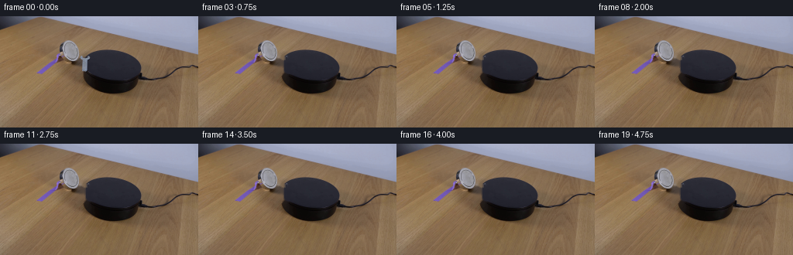
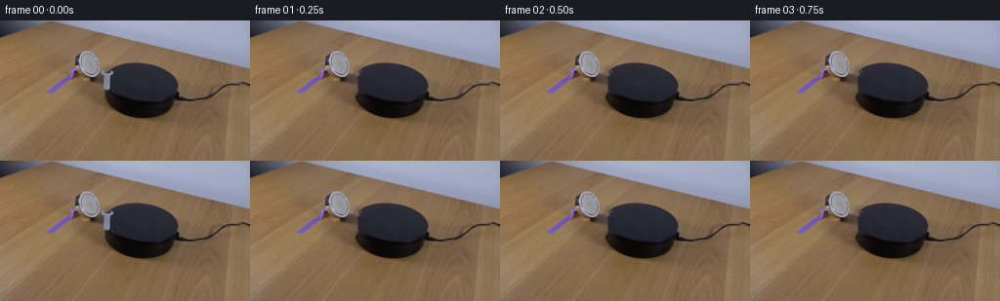
展开代码变化
--- 上一保存版本
+++ 本次保存版本
@@ -33,21 +33,22 @@
mask = cv2.dilate(mask, np.ones((3, 3), np.uint8), iterations=1)
repaired = cv2.inpaint(image, mask, 2.5, cv2.INPAINT_TELEA)
- # The platform's dark lip is a strong horizontal feature. Rebuild the few
- # pixels where inpainting blends the warm table into that edge.
- for y in range(53, 72):
- for x in range(113, 117):
- if x > 114:
- continue
- left = repaired[y, max(117, min(124, x + 5))]
- right = repaired[y, min(150, x + 12)]
- t = (x - 113) / 2.0
- repaired[y, x] = np.rint((1.0 - t) * left + t * right).astype(np.uint8)
+ # The platform edge is a smooth diagonal, so rebuild the occluded strip
+ # from nearby table and platform samples instead of relying on inpaint.
+ for y in range(50, 75):
+ seam = 114.0 - 0.43 * (y - 52)
+ for x in range(100, 119):
+ table = image[y, x - 9].astype(np.float32)
+ platform = image[y, min(255, x + 9)].astype(np.float32)
+ blend = np.clip((x - seam + 1.1) / 2.2, 0.0, 1.0)
+ color = (1.0 - blend) * table + blend * platform
+ repaired[y, x] = np.rint(color).astype(np.uint8)
- # Light temporal denoising of the patch avoids a visible inpaint seam.
- roi = repaired[47:77, 100:121]
- smooth = cv2.bilateralFilter(roi, 5, 11, 5)
- repaired[47:77, 100:121] = smooth
+ # A very small amount of texture noise keeps the repaired strip photographic.
+ rng = np.random.default_rng(7)
+ noise = rng.normal(0.0, 1.1, (25, 19, 1))
+ patch = repaired[50:75, 100:119].astype(np.float32) + noise
+ repaired[50:75, 100:119] = np.clip(np.rint(patch), 0, 255).astype(np.uint8)
return repaired
@@ -154,8 +155,18 @@
for index in range(1, N_FRAMES):
progress = index / (N_FRAMES - 1)
# Constant clockwise angular speed with only a barely perceptible ease-in.
- angle = 150.0 * progress + 0.7 * np.sin(np.pi * progress)
+ angle = 105.0 * progress + 0.7 * np.sin(np.pi * progress)
warped, matrix = transform_sprite(sprite, origin, pivot, angle)
+ # The magnet draws the wrench slightly farther onto the platform as it
+ # turns, keeping its full contact footprint on the black surface.
+ matrix[0, 2] += 17.0 * progress
+ matrix[1, 2] -= 5.0 * progress
+ warped = cv2.warpAffine(
+ sprite, matrix, (warped.shape[1], warped.shape[0]),
+ flags=cv2.INTER_LANCZOS4,
+ borderMode=cv2.BORDER_CONSTANT,
+ borderValue=(0, 0, 0, 0),
+ )
frames[index] = composite(base, warped, matrix, angle)
artifact_io.save(frames, CASE_DIR)
候选 03播放与检查图
点击播放 · 原生 RGB 像素

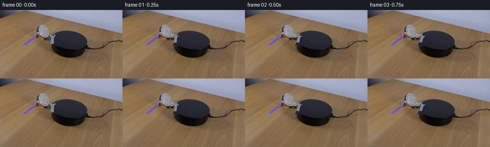
展开代码变化
--- 上一保存版本
+++ 本次保存版本
@@ -79,24 +79,25 @@
return sprite, (x0, y0)
-def transform_sprite(sprite, origin, pivot, angle_deg):
+def transform_sprite(sprite, origin, pivot, angle_deg, canvas_shape, translation):
x0, y0 = origin
px, py = pivot
local_pivot = (px - x0, py - y0)
matrix = cv2.getRotationMatrix2D(local_pivot, -angle_deg, 1.0)
matrix[0, 2] += x0
matrix[1, 2] += y0
+ matrix[0, 2] += translation[0]
+ matrix[1, 2] += translation[1]
+ h, w = canvas_shape[:2]
warped = cv2.warpAffine(
sprite,
matrix,
- (sprite.shape[1] + 8, sprite.shape[0] + 8),
+ (w, h),
flags=cv2.INTER_LANCZOS4,
borderMode=cv2.BORDER_CONSTANT,
borderValue=(0, 0, 0, 0),
)
- matrix[0, 2] -= 4
- matrix[1, 2] -= 4
- return warped, matrix
+ return warped
def soft_shadow(alpha, angle_deg):
@@ -111,34 +112,20 @@
return np.clip(moved * 0.34, 0.0, 0.42)
-def composite(base, sprite, matrix, angle_deg):
+def composite(base, sprite, angle_deg):
"""Composite a premultiplied-alpha sprite over the repaired still."""
h, w = base.shape[:2]
canvas = base.astype(np.float32)
- sh, sw = sprite.shape[:2]
# Put the moving shadow just below the original contact point.
alpha = sprite[:, :, 3] / 255.0
shadow = soft_shadow(alpha, angle_deg)
- shadow_canvas = cv2.warpAffine(
- shadow, matrix, (w, h), flags=cv2.INTER_LINEAR,
- borderMode=cv2.BORDER_CONSTANT, borderValue=0,
- )
- shade = 1.0 - 0.28 * shadow_canvas
+ shade = 1.0 - 0.28 * shadow
canvas *= shade[:, :, None]
rgb = sprite[:, :, :3].astype(np.float32)
a = alpha[:, :, None]
- rgb_canvas = cv2.warpAffine(
- rgb, matrix, (w, h), flags=cv2.INTER_LANCZOS4,
- borderMode=cv2.BORDER_CONSTANT, borderValue=0,
- )
- alpha_canvas = cv2.warpAffine(
- alpha, matrix, (w, h), flags=cv2.INTER_LANCZOS4,
- borderMode=cv2.BORDER_CONSTANT, borderValue=0,
- )
- alpha_canvas = np.clip(alpha_canvas, 0.0, 1.0)
- canvas = canvas * (1.0 - alpha_canvas[:, :, None]) + rgb_canvas * alpha_canvas[:, :, None]
+ canvas = canvas * (1.0 - a) + rgb * a
return np.clip(np.rint(canvas), 0, 255).astype(np.uint8)
@@ -156,18 +143,13 @@
progress = index / (N_FRAMES - 1)
# Constant clockwise angular speed with only a barely perceptible ease-in.
angle = 105.0 * progress + 0.7 * np.sin(np.pi * progress)
- warped, matrix = transform_sprite(sprite, origin, pivot, angle)
# The magnet draws the wrench slightly farther onto the platform as it
# turns, keeping its full contact footprint on the black surface.
- matrix[0, 2] += 17.0 * progress
- matrix[1, 2] -= 5.0 * progress
- warped = cv2.warpAffine(
- sprite, matrix, (warped.shape[1], warped.shape[0]),
- flags=cv2.INTER_LANCZOS4,
- borderMode=cv2.BORDER_CONSTANT,
- borderValue=(0, 0, 0, 0),
+ warped = transform_sprite(
+ sprite, origin, pivot, angle, image.shape,
+ (17.0 * progress, -5.0 * progress),
)
- frames[index] = composite(base, warped, matrix, angle)
+ frames[index] = composite(base, warped, angle)
artifact_io.save(frames, CASE_DIR)
可观测工具轨迹
实际执行的命令与返回图片。
命令 1exit 0
/bin/bash -c "pwd && rg --files -g '"'!*.mp4'"' -g '"'!*.mov'"' | sort | head -200"
命令 2exit 0
/bin/bash -c "sed -n '1,240p' prompt.txt"
命令 3exit 0
/bin/bash -c "sed -n '1,280p' GENERATION_RULES.md"
命令 4exit 0
/bin/bash -c "ls -la && find . -maxdepth 2 -type f -printf '%p %s bytes\\n' | sort"
命令 5exit 0
/bin/bash -c "sed -n '1,260p' artifact_io.py"
命令 6exit 0
/bin/bash -c "sed -n '1,260p' player_template.html"
命令 7exit 0
/bin/bash -c "python - <<'PY'
from PIL import Image
im=Image.open('first_frame.png')
print(im.mode, im.size)
for name in ['cv2','numpy','scipy','PIL']:
try:
m=__import__(name); print(name, getattr(m,'__version__','ok'))
except Exception as e: print(name, 'ERR', e)
PY"命令 8exit 0
/bin/bash -c "python - <<'PY'
from PIL import Image
im=Image.open('first_frame.png')
im.crop((50,15,190,95)).resize((840,480), Image.Resampling.NEAREST).save('.tmp/objects_zoom.png')
PY"命令 9exit 0
/bin/bash -c "python - <<'PY'
from PIL import Image, ImageDraw, ImageFont
im=Image.open('first_frame.png')
crop=im.crop((95,38,130,80)).resize((700,840), Image.Resampling.NEAREST)
d=ImageDraw.Draw(crop)
for x in range(0,36):
if (x+95)%5==0:
X=(x)*20
d.line((X,0,X,840), fill=(255,0,0), width=1)
d.text((X+2,2),str(x+95),fill=(255,255,0))
for y in range(0,43):
if (y+38)%5==0:
Y=y*20
d.line((0,Y,700,Y), fill=(255,0,0), width=1)
d.text((2,Y+2),str(y+38),fill=(255,255,0))
crop.save('.tmp/tool_grid.png')
PY"命令 10exit 0
/bin/bash -c "python - <<'PY'
from PIL import Image
im=Image.open('first_frame.png')
im.crop((100,43,127,77)).resize((1080,1360), Image.Resampling.LANCZOS).save('.tmp/tool_lanczos.png')
PY"命令 11exit 0
/bin/bash -c "python - <<'PY'
from PIL import Image
import numpy as np, cv2
im=np.array(Image.open('first_frame.png'))
reg=im[42:77,104:126]
hsv=cv2.cvtColor(reg,cv2.COLOR_RGB2HSV)
print('wrench region rgb stats')
for y in range(0,35,4):
print(42+y, [(104+x, tuple(reg[y,x])) for x in range(0,22,4)])
print('hsv medians')
print(np.median(hsv.reshape(-1,3),axis=0))
# high gray candidates
for t in [40,50,60,70,80,90,100]:
sat=hsv[:,:,1]; val=hsv[:,:,2]
m=(val>t)&(sat<100)
print(t,m.sum())
PY"命令 12exit 0
/bin/bash -c "python - <<'PY'
from PIL import Image, ImageDraw
import numpy as np, cv2
im=np.array(Image.open('first_frame.png'))
x0,y0,x1,y1=100,46,123,80
reg=im[y0:y1,x0:x1]
R,G,B=[reg[:,:,i].astype(int) for i in range(3)]
V=np.max(reg,axis=2); mn=np.min(reg,axis=2); S=(V-mn)*255/np.maximum(V,1)
# several masks
m=(V>58)&((B-R)>5)&((G-R)>0)&(S<125)
# only within likely area x>=105 y>=52 x<=117 y<=77
Y,X=np.mgrid[y0:y1,x0:x1]
m &= (X>=105)&(X<=118)&(Y>=52)&(Y<=77)
print('mask pixels',m.sum())
# draw overlay threshold green
out=reg.copy(); out[m]=[0,255,0]
Image.fromarray(out).resize((690,1020),Image.Resampling.NEAREST).save('.tmp/mask_overlay.png')
# ascii each pixel: bright metal M, dark shadow #, platform ., wood w, magnet x
lines=[]
for y in range(y0,y1):
s=''
for x in range(x0,x1):
r,g,b=im[y,x]
if m[y-y0,x-x0]: c='M'
elif b>r+8 and 35<max(im[y,x])<65: c='.'
elif max(im[y,x])>70 and r>b+10: c='w'
elif max(im[y,x])<30: c='#'
elif max(im[y,x])<65: c='d'
else: c='?'
s+=c
lines.append(f'{y:02d} '+s)
print(' '+''.join(str(x//10%10) for x in range(x0,x1)))
print(' '+''.join(str(x%10) for x in range(x0,x1)))
print('\\n'.join(lines))
PY"命令 13exit 0
/bin/bash -c "python - <<'PY'
from PIL import Image
import numpy as np
im=np.array(Image.open('first_frame.png'))
# Print RGB across rows x 95..125 at key y
for y in [48,52,56,60,64,68,72,76]:
print('\\ny=',y)
for x in range(95,126,3): print(x,tuple(im[y,x]),end='; ')
print()
PY"命令 14exit 0
/bin/bash -c "python - <<'PY'
from PIL import Image
im=Image.open('first_frame.png')
im.crop((100,47,121,75)).resize((840,1120), Image.Resampling.NEAREST).save('.tmp/tool_nearest.png')
PY"命令 15exit 0
/bin/bash -c "python - <<'PY'
from PIL import Image
import numpy as np
im=np.array(Image.open('first_frame.png'))
# create annotated close crop with coordinates every pixel as text? use nearest + grid
x0,y0,x1,y1=100,47,122,76
S=32
crop=Image.fromarray(im[y0:y1,x0:x1]).resize(((x1-x0)*S,(y1-y0)*S), Image.Resampling.NEAREST)
from PIL import ImageDraw
D=ImageDraw.Draw(crop)
for i,x in enumerate(range(x0,x1)):
D.line((i*S,0,i*S,crop.height),fill=(255,0,0))
D.text((i*S+2,2),str(x),fill=(255,255,0))
for j,y in enumerate(range(y0,y1)):
D.line((0,j*S,crop.width,j*S),fill=(255,0,0))
D.text((2,j*S+12),str(y),fill=(255,255,0))
crop.save('.tmp/tool_coords.png')
PY"命令 16exit 0
/bin/bash -c "python - <<'PY'
from PIL import Image
import numpy as np
im=np.array(Image.open('first_frame.png')).astype(int)
x0,x1=102,116; y0,y1=48,74
print('value, B-R')
print(' '+''.join(str(x//10%10) for x in range(x0,x1)))
print(' '+''.join(str(x%10) for x in range(x0,x1)))
for y in range(y0,y1):
s=''
for x in range(x0,x1):
r,g,b=im[y,x]; v=max(r,g,b); d=b-r
if v>135 and d>5: c='M'
elif v>105 and d>5: c='m'
elif v>80 and d>3: c='o'
elif v<35: c='#'
elif d>5: c='.'
elif r>b+12: c='w'
else: c='?'
s+=c
print(f'{y:02d} {s}')
PY"命令 17exit 0
/bin/bash -c "python - <<'PY'
from PIL import Image
import numpy as np
im=np.array(Image.open('first_frame.png')).astype(int)
x0,x1=102,116; y0,y1=48,74
for y in range(y0,y1):
print('\\ny',y)
for x in range(x0,x1):
r,g,b=im[y,x]; v=max(r,g,b)
if b-r>3 or v<70:
print(f'{x}:{r},{g},{b}',end=' ')
print()
PY"命令 18exit 0
/bin/bash -c "python - <<'PY'
from PIL import Image
import numpy as np
im=np.array(Image.open('first_frame.png')).astype(int)
# platform mask sample medians per y, from x 120..170 avoiding highlight? just print ranges
for y in range(42,92,3):
vals=im[y,120:175]
print(y, np.median(vals,axis=0).astype(int), vals.min(axis=0), vals.max(axis=0))
PY"命令 19exit 0
/bin/bash -c "python - <<'PY'
from PIL import Image
import numpy as np
im=np.array(Image.open('first_frame.png')).astype(int)
for y in [54,55,56,57,58,59,60,61,62,63,64,65,66,67,68,69,70,71]:
print('y',y,'x116-125',[(x,tuple(im[y,x])) for x in range(116,126)])
PY"命令 20exit 0
/bin/bash -c "python - <<'PY'
from PIL import Image, ImageDraw
import numpy as np, cv2
im=np.array(Image.open('first_frame.png'))
# mask wrench and its contact shadow, slightly generous
mask=np.zeros(im.shape[:2],np.uint8)
poly=np.array([[103,50],[107,50],[107,53],[116,53],[116,56],[113,56],[113,71],[115,72],[115,75],[107,75],[107,70],[105,70],[105,56],[103,56]],np.int32)
cv2.fillPoly(mask,[poly],255)
# feather inpaint mask via distance; inpaint needs binary-ish
for radius in [2,3,4,5]:
m=cv2.dilate(mask,np.ones((radius*2+1,radius*2+1),np.uint8))
out=cv2.inpaint(im,m,3,cv2.INPAINT_TELEA)
Image.fromarray(out[42:82,95:125]).resize((900,1200),Image.Resampling.NEAREST).save(f'.tmp/inpaint{radius}.png')
PY"命令 21exit 0
/bin/bash -c "python - <<'PY'
from PIL import Image
im=Image.open('first_frame.png')
im.resize((1024,576),Image.Resampling.NEAREST).save('.tmp/full_nearest.png')
PY"命令 22exit 0
/bin/bash -c 'python generate.py'
命令 23exit 0
/bin/bash -c "python - <<'PY'
from PIL import Image
import numpy as np
for i in [0,1,5,10,15,19]:
im=Image.open(f'frames/{i:02d}.png')
im.crop((80,20,160,100)).resize((800,800),Image.Resampling.NEAREST).save(f'.tmp/crop{i:02d}.png')
PY"命令 24exit 0
/bin/bash -c 'python generate.py'
命令 25exit 0
/bin/bash -c "python - <<'PY'
from PIL import Image
for i in [1,5,10,15,19]:
Image.open(f'frames/{i:02d}.png').crop((80,20,170,100)).resize((900,800),Image.Resampling.NEAREST).save(f'.tmp/new{i:02d}.png')
PY"命令 26exit 0
/bin/bash -c "python - <<'PY'
from pathlib import Path
import json, numpy as np
from PIL import Image
root=Path('.')
frames=np.stack([np.array(Image.open(root/'frames'/f'{i:02d}.png')) for i in range(20)])
first=np.array(Image.open('first_frame.png'))
pixels=np.load('pixels.npz')['pixels']
print('frames',frames.shape,frames.dtype)
print('first_identical',np.array_equal(frames[0],first))
print('pixels_shape',pixels.shape,pixels.dtype)
print('pixels_roundtrip',np.array_equal(pixels.transpose(2,0,1),frames))
print('index_bytes',(root/'index.html').stat().st_size)
print('mp4_bytes',(root/'video.mp4').stat().st_size)
PY"命令 27exit 0
/bin/bash -c "python - <<'PY'
from pathlib import Path
import numpy as np
from PIL import Image
frames=np.stack([np.array(Image.open(f'frames/{i:02d}.png')) for i in range(20)])
p=np.load('pixels.npz')['pixels']
dec=((p>>16)&255).transpose(2,0,1)
print('decoded_red_equal',np.array_equal(dec,frames[:,:,:,0]))
print('diff_counts',[int(np.any(frames[i]"'!=frames[i-1],axis=2).sum()) for i in range(1,20)])
print('"'frame means',[round(float(frames[i].mean()),3) for i in range(20)])
PY"命令 28exit 0
/bin/bash -c 'which ffmpeg ffprobe chromium chromium-browser google-chrome || true; ffprobe -v error -show_entries stream=width,height,nb_frames,r_frame_rate,pix_fmt -of default=noprint_wrappers=1 video.mp4 2>&1 || true'
命令 29exit 0
/bin/bash -c "python - <<'PY'
from pathlib import Path
from PIL import Image
import cv2
root=Path('.')
w=cv2.VideoCapture(str(root/'video.mp4'))
print('opened',w.isOpened(),'frames',int(w.get(cv2.CAP_PROP_FRAME_COUNT)),'fps',w.get(cv2.CAP_PROP_FPS),'size',(int(w.get(cv2.CAP_PROP_FRAME_WIDTH)),int(w.get(cv2.CAP_PROP_FRAME_HEIGHT))))
w.release()
print('outputs',sorted(p.name for p in root.iterdir() if p.is_file()))
PY"视觉工具实际返回图片 1
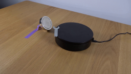
视觉工具实际返回图片 2
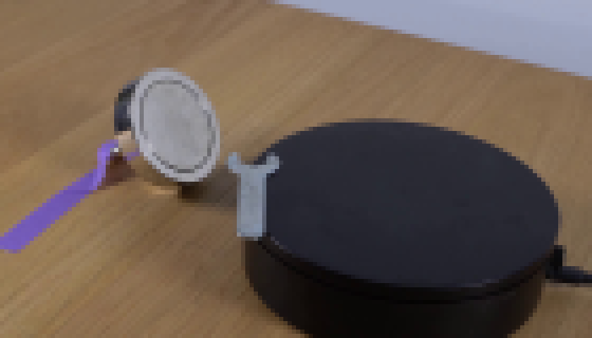
视觉工具实际返回图片 3
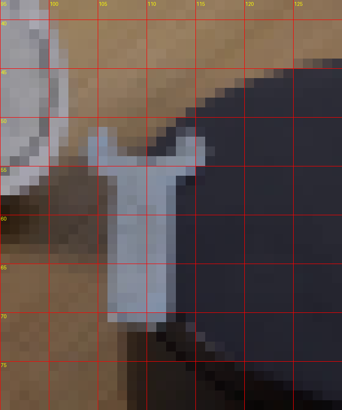
视觉工具实际返回图片 4
视觉工具实际返回图片 5
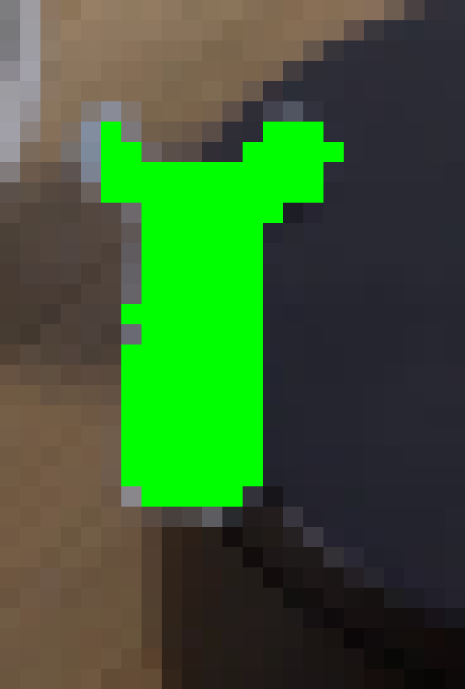
视觉工具实际返回图片 6
视觉工具实际返回图片 7
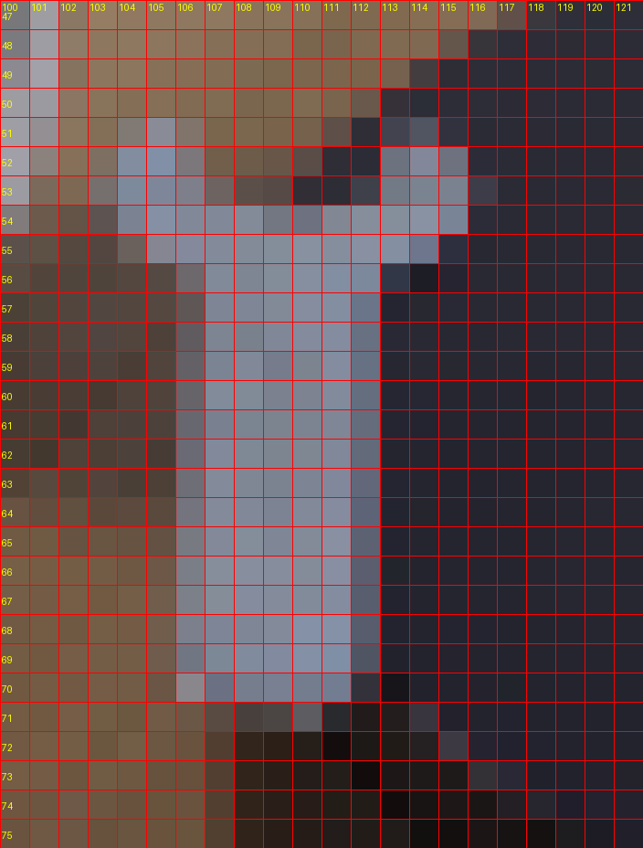
视觉工具实际返回图片 8
视觉工具实际返回图片 9
视觉工具实际返回图片 10

视觉工具实际返回图片 11

视觉工具实际返回图片 12

视觉工具实际返回图片 13
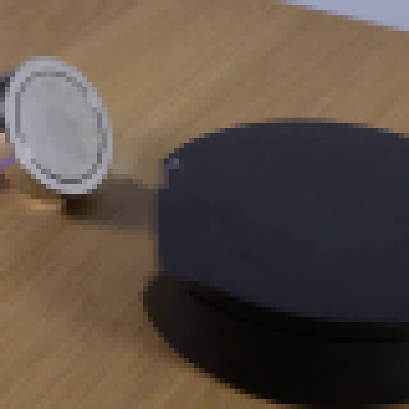
视觉工具实际返回图片 14
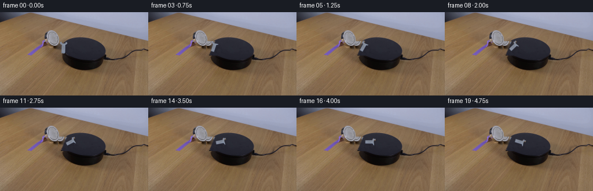
视觉工具实际返回图片 15
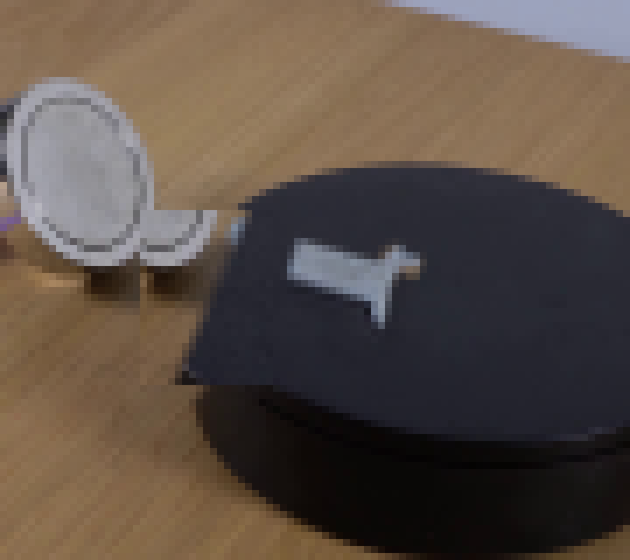
视觉工具实际返回图片 16
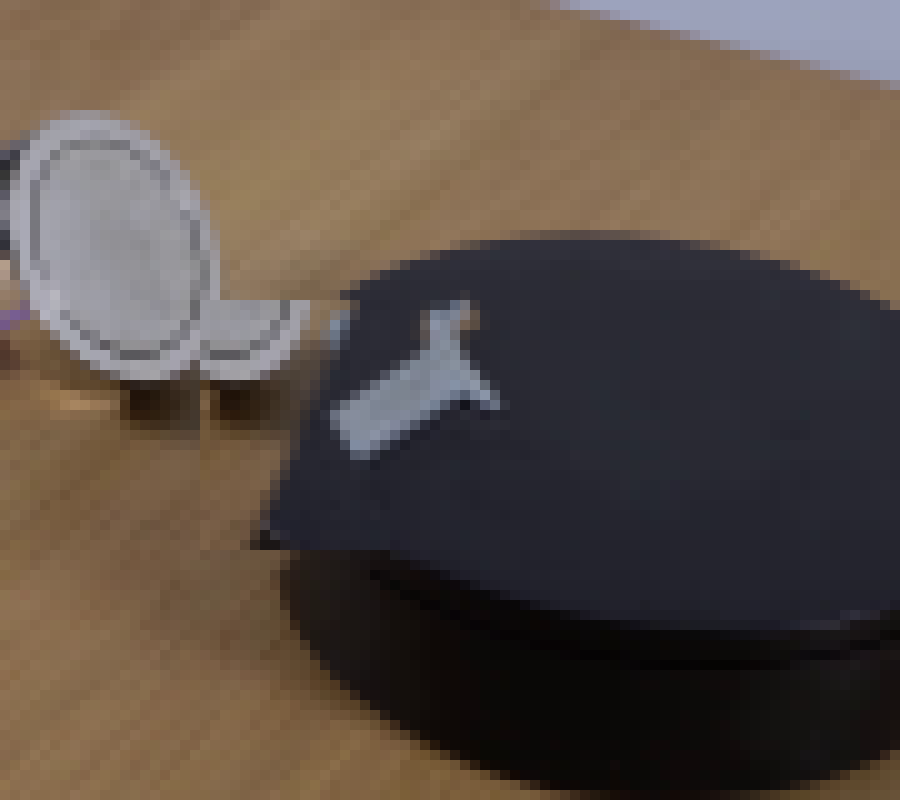
视觉工具实际返回图片 17
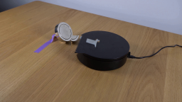
视觉工具实际返回图片 18
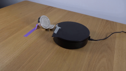
保存候选 3 份；完成命令 29 次；可验证图片返回 18 张。原始 API 响应与完整日志保留在本地。